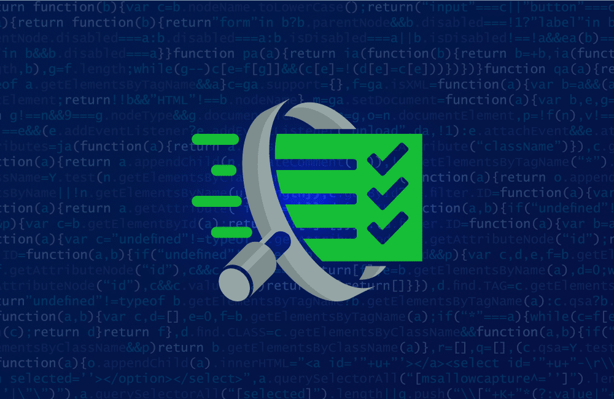

Projects
ReconX
I built ReconX as a Python-based automated vulnerability scanner to deepen my practical understanding of web application security.
I started by exploring how basic reconnaissance and scanning techniques work — like open port detection, banner grabbing, and HTTP header inspection.
Using Python, I combined modules like socket for low-level networking and requests for web interaction. I implemented port scanning to identify open services, banner grabbing to fingerprint software, and then focused on analyzing common security headers inspired by the OWASP Top 10.
I also added simple tests for directory traversal vulnerabilities by crafting suspicious URL paths.
Throughout the project, I applied ethical hacking practices and learned how automated tools can assist in identifying potential weaknesses in web apps.
Building this tool gave me hands-on experience with core cybersecurity concepts in a lightweight, scriptable format.
